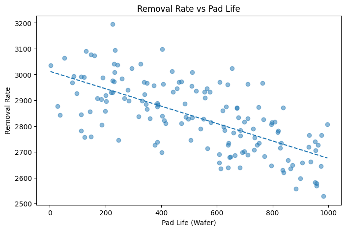
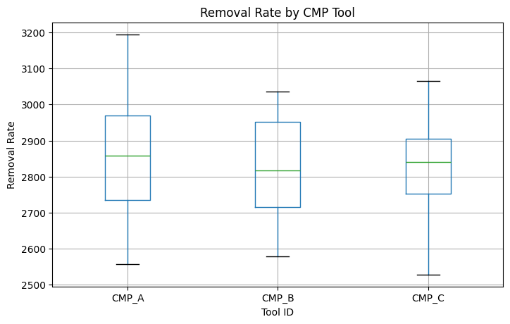
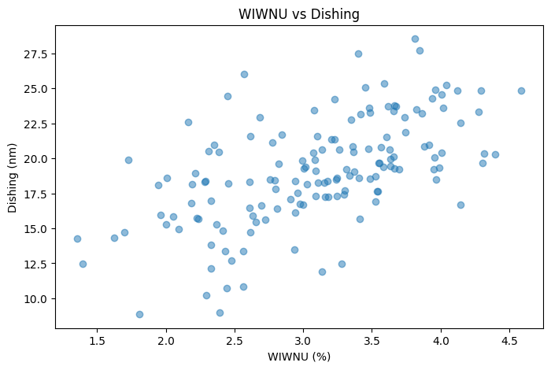

Removal Rate vs Pad Life

결과 해석 · 공정 관점
패드 사용량에 따른 제거율 변화를 확인한 결과입니다. 패드 수명에 따라 제거율이 달라질 경우, 드레싱·교체 주기와 공정 조건을 함께 관리할 필요가 있습니다.
CMP(Chemical Mechanical Planarization) 공정의 주요 조건과 제거율 및 공정 품질의 관계를 분석하여, 공정 안정성과 품질에 영향을 줄 수 있는 요인을 탐색한 프로젝트입니다.
CMP 공정은 화학적 반응과 기계적 연마를 동시에 이용하여 웨이퍼 표면을 평탄화하는 공정입니다.
CMP 공정의 주요 파라미터와 품질 지표를 함께 비교하여 공정 조건 변화에 따라 결과값이 어떻게 달라지는지 확인하도록 분석했습니다.
CMP에서는 단순히 연마량을 높이는 것보다 목표 제거율을 안정적으로 유지하는 것이 중요합니다.
공정 조건별 Removal Rate의 분포를 비교하여 과도하게 높거나 낮은 구간을 확인할 수 있도록 구성했습니다.
공정 파라미터와 결과 변수의 상관관계를 비교하여 Removal Rate 또는 품질 변화와 함께 움직이는 주요 변수를 탐색했습니다.
평균값만 확인하지 않고 데이터 분포와 변동성을 함께 살펴봄으로써 동일 조건에서도 공정 결과의 산포가 커지는 구간을 확인할 수 있도록 했습니다.
Removal Rate가 목표 수준에서 지속적으로 벗어난다면 Pressure, 회전 조건, Slurry 공급 상태 등의 공정 조건을 우선적으로 확인할 수 있습니다.
CMP Pad의 마모나 Conditioning 상태 변화는 공정 결과의 장기적인 Drift와 연결될 수 있으므로 시간에 따른 품질 변화와 함께 확인하는 것이 중요합니다.
높은 Removal Rate만을 목표로 하기보다 목표 제거율과 Wafer 내 균일도, 공정 변동성을 함께 고려하여 안정적인 Process Window를 설정해야 합니다.
CMP 공정 데이터 분석 코드는 GitHub Jupyter Notebook에서 확인할 수 있습니다.
View Notebook on GitHub →CMP 공정 분석의 실제 코드, 그래프 및 출력 결과입니다.
실제 분석 결과 보기 →아래 그래프는 해당 Python 노트북에서 실제 실행되어 저장된 출력입니다.

결과 해석 · 공정 관점
패드 사용량에 따른 제거율 변화를 확인한 결과입니다. 패드 수명에 따라 제거율이 달라질 경우, 드레싱·교체 주기와 공정 조건을 함께 관리할 필요가 있습니다.

결과 해석 · 공정 관점
CMP 장비별 제거율 분포를 비교했습니다. 장비 간 중심값 또는 산포 차이는 장비 매칭과 유지보수 점검의 출발점이 됩니다.

결과 해석 · 공정 관점
웨이퍼 내 불균일도(WIWNU)와 Dishing 관계를 확인했습니다. 평탄화 품질을 함께 관리해야 후속 리소그래피·식각 공정의 변동 위험을 줄일 수 있습니다.